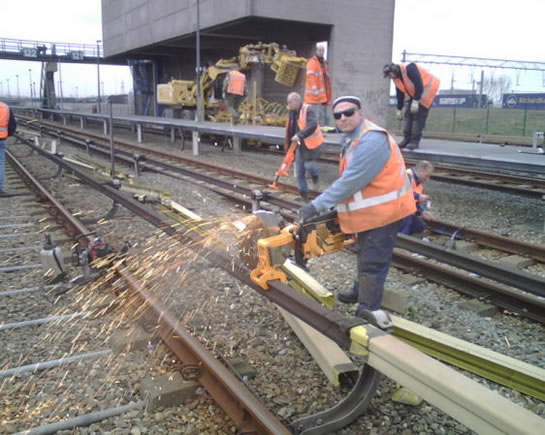
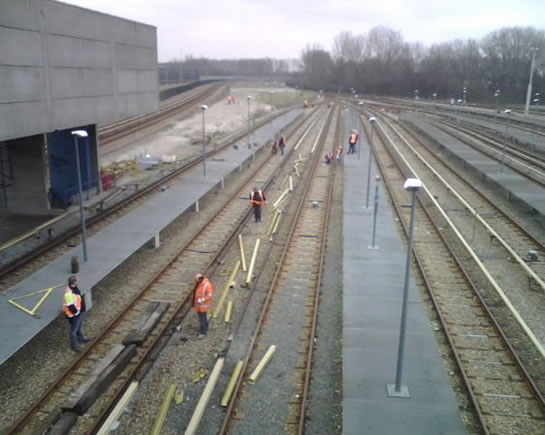
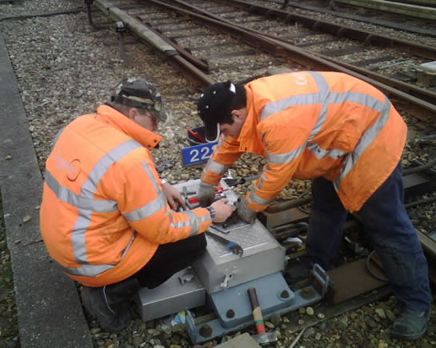
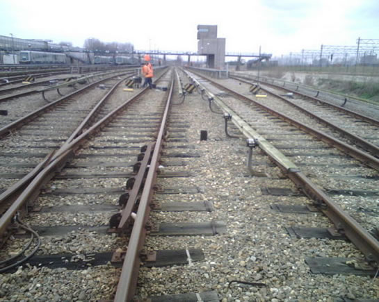
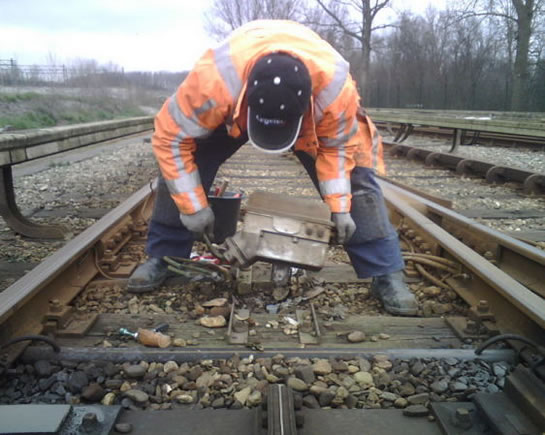
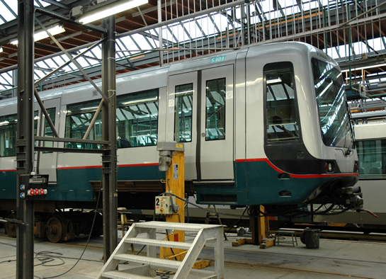

Uitbreiding emplacement Waalhaven gestart en meer nieuws...
- maandag 01 december 2008 10:11
- Geschreven door Joachim
Vandaag is gestart met de verlenging van de opstelsporen van het emplacement Waalhaven. De verlenging is nodig om ruimte te bieden aan de nieuwe metrorijtuigen voor de RandstadRail Erasmuslijn. De eerste daarvan wordt in het eerste kwartaal van dit jaar verwacht. De opstelsporen 121 t/m 130 worden met ongeveer tachtig meter in oostelijke richting verlengd. De spooruitbreiding moet afgerond zijn op 1 augustus 2008 en wordt uitgevoerd door Strukton, Cegelec Railinfra, Siemens en RET.
De voorbereidende werkzaamheden bestaan vooral uit het verwijderen van de bestaande infrastructuur. Vorig jaar werden bossages verwijderd en werd er zand gestort op de plek waar de verlengde opstelsporen komen.
Foto's met dank aan  Jeepie.nl
Jeepie.nl

De beschermkap van de derde rail is verwijderd. Daarna wordt de stroomrail doorgezaagd.

Werkzaamheden aan de sporen 121 en 122 van emplacement Waalhaven.

Omdat ook de plaats van de wissels verandert, wordt de wisselaansturing gedemonteerd. Binnen dit project is dat een van de taken van Cegelec Railinfra.

Overzichtsfoto van het emplacement Waalhaven. De sporen op de voorgrond worden met ongeveer 80 meter verlengd.

Ook spoortrafo's van het spoorbeveiligingssysteem ATB worden verwijderd door Cegelec Railinfra.
Erasmuslijn gestremd
In de zomermaanden is de Erasmuslijn een aantal dagen gestremd, dit door spooronderhoud op de oudste delen van de metrobaan. De volgende data zijn nog onder voorbehoud. Van 28 juli tot en met 8 augustus is er een stremming tussen de stations Wilhelminaplein en Centraal Station in verband met de vernieuwing van de wisselcomplexen Beurs en Leuvehaven. Van 9 augustus tot en met 15 augustus is er een stremming tussen de stations Beurs en Centraal Station in verband met werkzaamheden bij het Centraal Station door de aansluiting van de RandstadRail Erasmuslijn en het nieuw te bouwen metrostation aldaar.
Over stremmingen als gevolg van vernieuwing van de wisselcomplexen Rhoon en Poortugaal is nog niets bekend.
5217
Rijtuig 5217 heeft een technische revisie ondergaan op de lijnwerkplaats Waalhaven en werd ongeveer drie weken geleden weer in dienst gesteld.
5301
De bakken van rijtuig 5301 staan gesplitst op de Centrale Werkplaats Kleiweg. Momenteel ondergaat de 5301 een midlife proefrevisie. Het is niet geheel duidelijk wat de revisiewerkzaamheden inhouden.
Foto met dank aan Jan van Huijksloot

De A-bak van rijtuig 5301 in de Centrale Werkplaats Kleiweg. De bak is van de draaistellen gelicht.
Nieuwe pantograaf
De rijtuigen 5228 en 5418 werden voorzien van een nieuwe pantograaf. Rijtuig 5418 is weer in dienst gesteld, nadat deze enige tijd buiten dienst stond omdat bepaalde onderdelen niet op voorraad waren.
LED-verlichting
Inmiddels zijn de metrorijtuigen van alle series voorzien van LED-verlichting in de toplichten, sluitlichten en eventuele alarmlichten. Bij de alarmlichten werd alleen LED-verlichting geplaatst aan de voorzijden. De frontlampen werden niet voorzien van LED-verlichting.